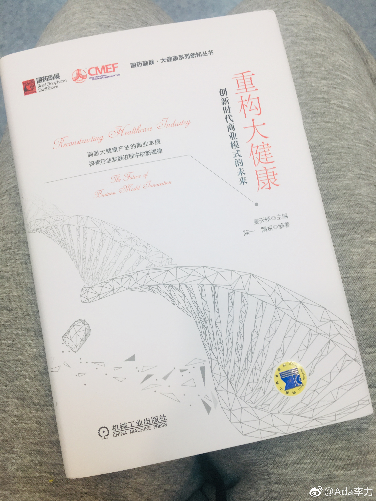
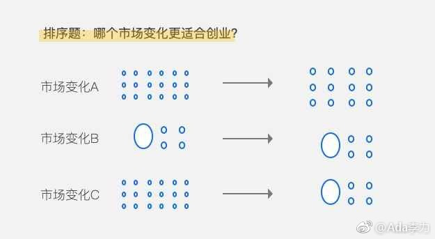

商业逻辑有时候是反常识和反直觉的，我作为技术人员和IT从业者，向来是讴歌技术进步的。但记得查理芒格就说过靠不断改进技术来提升行业效率的产业，其实是很差的投资对象。因为效率提升带来的收益都给了消费者，而不会给到生产者。技术提升意味着生产者要不断更新设备，因而抬升成本。
@Ada李力:
#创业# 昨天参加了《重构大健康》作者姜天骄的分享会，主要是讲如何避开医疗健康行业投资和并购的各种坑。
讲师提到一种坑就是重量轻价。市场看起来很大，增长速度也不错，但是整个行业就是收入持续下降。典型的就是糖尿病市场里的血糖仪。
这确实是一个奇怪的市场，糖尿病治疗看起来需求量很大，患者人数是不断在增长的，但是由于上游价格的大幅下降，造成了整个行业收入是持续减低的。这样来看，上游集中度不够的行业，都是比较差的行业，造成了整个产业链，没有人能够赚钱。
上游集中度不够的行业，产业链中哪些环节可能更赚钱？应该是渠道部分，比如PC互联网时代的百度，比如医美行业的新氧。
结合前一段时间听过的一堂课"预判行业机会"其中讲到一个框架，行业集中度变化的三种情况下，只有从分散到集中的这种变化中，对创业者是最有利的。从投资者的角度来讲，也是选择这样的企业，会最有利可图。
对创业者最不利的就是那种集中度本来很高的行业。变化后还是集中度很高，只是主角变了而已。比如通信行业。
对创业者来说，乱才意味着有机会。
讲师提到一种坑就是重量轻价。市场看起来很大，增长速度也不错，但是整个行业就是收入持续下降。典型的就是糖尿病市场里的血糖仪。
这确实是一个奇怪的市场，糖尿病治疗看起来需求量很大，患者人数是不断在增长的，但是由于上游价格的大幅下降，造成了整个行业收入是持续减低的。这样来看，上游集中度不够的行业，都是比较差的行业，造成了整个产业链，没有人能够赚钱。
上游集中度不够的行业，产业链中哪些环节可能更赚钱？应该是渠道部分，比如PC互联网时代的百度，比如医美行业的新氧。
结合前一段时间听过的一堂课"预判行业机会"其中讲到一个框架，行业集中度变化的三种情况下，只有从分散到集中的这种变化中，对创业者是最有利的。从投资者的角度来讲，也是选择这样的企业，会最有利可图。
对创业者最不利的就是那种集中度本来很高的行业。变化后还是集中度很高，只是主角变了而已。比如通信行业。
对创业者来说，乱才意味着有机会。
- 
- 